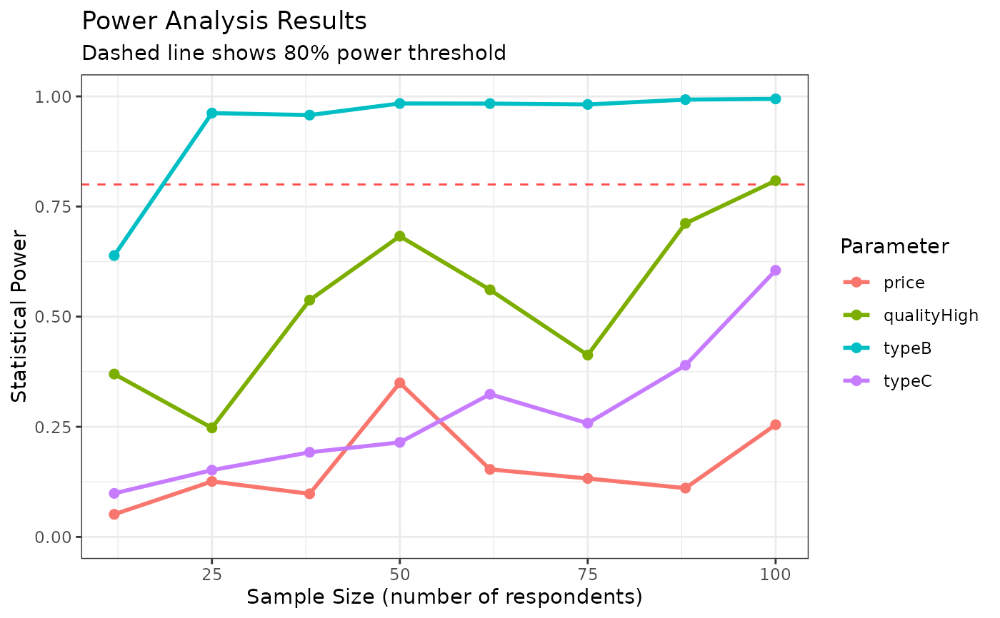

This function estimates the same model multiple times using different sample sizes to assess statistical power. It returns both the estimated models and a summary of coefficient estimates, standard errors, and power statistics.
Usage
cbc_power(
data,
outcome = "choice",
obsID = "obsID",
pars = NULL,
randPars = NULL,
n_breaks = 10,
n_q = NULL,
panelID = NULL,
alpha = 0.05,
return_models = FALSE,
n_cores = NULL,
...
)Arguments
- data
A data frame containing choice data. Can be a
cbc_choicesobject or any data frame with the required columns.- outcome
Name of the outcome variable column (1 for chosen, 0 for not). Defaults to "choice".
- obsID
Name of the observation ID column. Defaults to "obsID".
- pars
Names of the parameters to estimate. If NULL (default), will auto-detect from column names for
cbc_choicesobjects.- randPars
Named vector of random parameters and their distributions ('n' for normal, 'ln' for log-normal). Defaults to NULL.
- n_breaks
Number of sample size groups to test. Defaults to 10.
- n_q
Number of questions per respondent. Auto-detected for
cbc_choicesobjects if not specified.- panelID
Name of the panel ID column for panel data. Auto-detected as "respID" for multi-respondent
cbc_choicesobjects.- alpha
Significance level for power calculations. Defaults to 0.05.
- return_models
If TRUE, includes full model objects in returned list. Defaults to FALSE.
- n_cores
Number of cores for parallel processing. Defaults to
parallel::detectCores() - 1.- ...
Additional arguments passed to
logitr::logitr().
Value
A cbc_power object containing:
power_summary: Data frame with sample sizes, coefficients, estimates, standard errors, t-statistics, and powermodels: List of estimated models (ifreturn_models = TRUE)sample_sizes: Vector of sample sizes testedn_breaks: Number of breaks usedalpha: Significance level used
Examples
library(cbcTools)
# Create profiles and design
profiles <- cbc_profiles(
price = c(1, 2, 3),
type = c("A", "B", "C"),
quality = c("Low", "High")
)
design <- cbc_design(profiles, n_alts = 2, n_q = 6)
# Simulate choices
priors <- cbc_priors(profiles, price = -0.1, type = c(0.5, 0.2), quality = 0.3)
choices <- cbc_choices(design, priors)
# Run power analysis
power_results <- cbc_power(choices, n_breaks = 8)
#> Auto-detected parameters: price, typeB, typeC, qualityHigh
#> Using 'respID' as panelID for panel data estimation.
#> Estimating models using 3 cores...
#> Model estimation complete!
# View results
print(power_results)
#> CBC Power Analysis Results
#> ==========================
#>
#> Sample sizes tested: 12 to 100 (8 breaks)
#> Significance level: 0.050
#> Parameters: price, typeB, typeC, qualityHigh
#>
#> Power summary (probability of detecting true effect):
#>
#> n = 12:
#> price : Power = 0.051, SE = 0.2087
#> typeB : Power = 0.639, SE = 0.4460
#> typeC : Power = 0.099, SE = 0.4325
#> qualityHigh : Power = 0.370, SE = 0.4044
#>
#> n = 38:
#> price : Power = 0.098, SE = 0.1129
#> typeB : Power = 0.958, SE = 0.2453
#> typeC : Power = 0.192, SE = 0.2357
#> qualityHigh : Power = 0.538, SE = 0.1898
#>
#> n = 50:
#> price : Power = 0.350, SE = 0.1013
#> typeB : Power = 0.984, SE = 0.2155
#> typeC : Power = 0.215, SE = 0.2003
#> qualityHigh : Power = 0.683, SE = 0.1693
#>
#> n = 75:
#> price : Power = 0.133, SE = 0.0819
#> typeB : Power = 0.982, SE = 0.1679
#> typeC : Power = 0.258, SE = 0.1622
#> qualityHigh : Power = 0.413, SE = 0.1345
#>
#> n = 100:
#> price : Power = 0.255, SE = 0.0716
#> typeB : Power = 0.994, SE = 0.1472
#> typeC : Power = 0.605, SE = 0.1413
#> qualityHigh : Power = 0.809, SE = 0.1159
#>
#> Use plot() to visualize power curves.
#> Use summary() for detailed power analysis.
plot(power_results)
